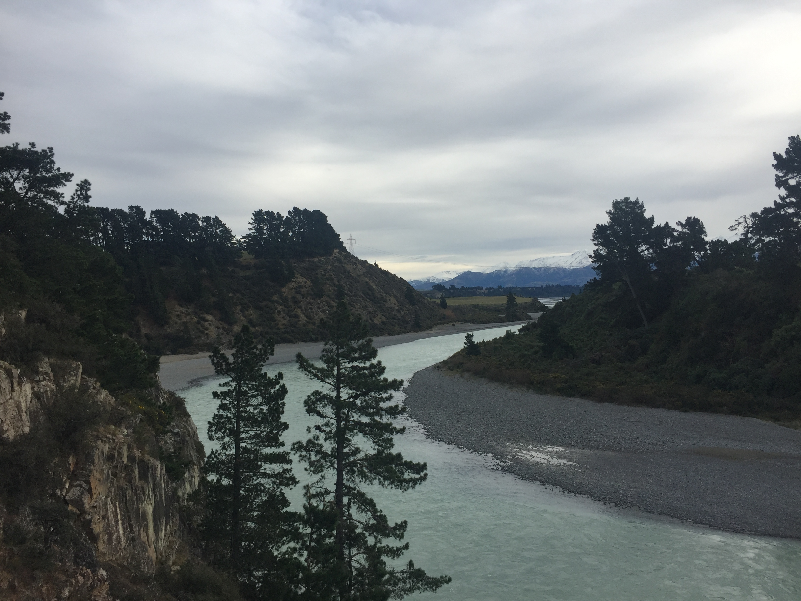
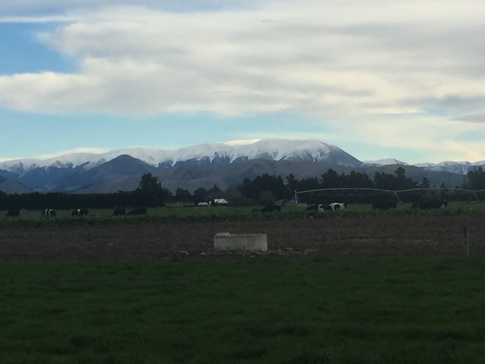

The rivers and lakes in New Zealand may be portrayed to be beautiful but 90% of rural rivers are unsafe and unhealthy for recreational use as well as 62% of New Zealand waterways being unsafe to swim in due to pollution. This is extremely unhealthy for people who are swimming in rivers and what's worse is that the government are hiding it from New Zealanders and they are not aware of the dangers of swimming in some waterways that are claimed to be fine and healthy. Although 62% of our waterways are unsafe to swim in due to pollution only 44% of New Zealand's lakes are actually defined as polluted meaning that people could be swimming in a waterway which is extremely unhealthy yet this is not being publicly said.

New Zealand clearly has a pollution problem which is not being addressed but us humans aren’t the only ones that it is effecting. Did you know that 72% of our Native fish are being threatened with extinction thanks to the amount of pollution in our waterways. 52% of water that is used in irrigation for cows comes from polluted rivers. Some of the things in the water that is spread over the grass that cows eat can lead to extreme illness or death when digested. If the cows are ill and still producing milk for us that could mean that each person that drinks some of that milk is getting a small part of that illness in them as well which builds up and up and can eventually be fatal to us.

Although this pollution is affecting cows, they are also contributing to this ever growing threat. Dairy farms have lots of cows on their farms, for obvious reasons, but should there be a limit on how many cows you can have or at least how close they are aloud to be near rivers. Cows pee has a high amount of nitrate. The dairy cows pee contributes 15 times as much pollution as an average human does. This means that New Zealand's 6.7 million cows contribute to the pollution as much as 100 million average people do. If these numbers don't scare you then maybe you should realise that the amount of pollution that these cows are producing is contributing to 63% of the pollution in rivers.